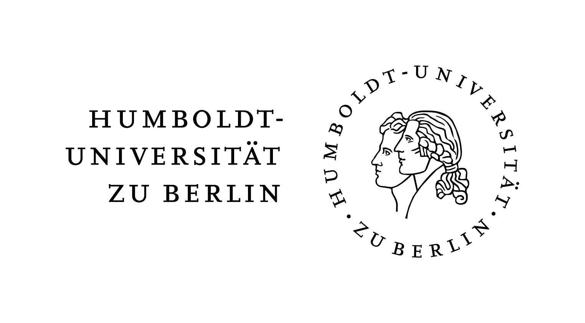
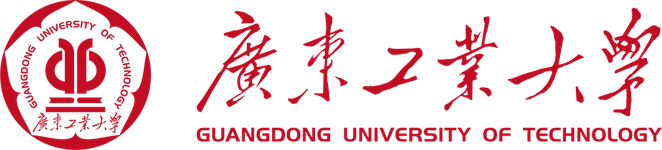

Ivan/Cheng Qian
Computer Science Master's candidate with practical experience in FMCG smart manufacturing, industrial IoT, compliance IT, and process automation. Currently supporting ThingWorx-based digitalization initiatives at P&G's Rakona manufacturing plant, focusing on production visibility, sensor-data dashboards, and operational monitoring. Previous experience across HSBC, Apple, and Huawei, with strengths in stakeholder communication, workflow digitalization, and multilingual collaboration.
Education
Apr. 2023 - Oct. 2026

M.Sc. in Computer Science
Humboldt University of Berlin · US News World Ranking #47, #1 in Germany
- Focus: Industrial Digitalization, Process Science, Supply Chain 3.0, Data Science.
- Relevant coursework: Business Process Automation, Reliable System, Visual Analytics, AI in Chemistry, Psychology in Informatics, Cognitive Robotics, Process Mining.
Sep. 2024 - Feb. 2025

Exchange Student
University of Zurich
- Selected as the sole faculty-nominated exchange student for the academic year.
- Focus: Data Science and Blockchain Technology.
Sep. 2016 - Jul. 2020

B.Eng. in Computer Science and Technology
Guangdong University of Technology
Focus: Big Data, Software Engineering, Mobile Development.
Professional Experience
May 2026 - Present

IIoT / Smart Manufacturing IT Intern
Procter & Gamble (P&G)
- Supporting the digitalization of 13 FMCG production lines by developing ThingWorx-based industrial applications to replace manual tracking with real-time production visibility.
- Developing JavaScript-based dashboard components integrating high-frequency sensor data from PRD manufacturing databases, enabling plant teams to monitor bottlenecks and production performance.
Oct. 2025 - Apr. 2026
Compliance IT & Process Automation Intern
HSBC
- Supported internal compliance-system development aligned with PBOC regulatory requirements by modeling workflows in BPMN.
- Introduced Playwright-based automated testing solutions, significantly cutting manual regression testing effort by approximately 70%.
Sep. 2023 - Jun. 2024

Technical Consultant (Working Student)
Huawei Germany Flagship Store Berlin
- Conducted cross-cultural technical consulting, gathering user requirements and troubleshooting complex device-to-cloud ecosystem issues.
- Recognized as a top-performing student consultant through strong stakeholder communication and engagement.
Aug. 2021 - Feb. 2022
Consulting Specialist
Apple Inc.
- Maintained team #1 NPS by translating complex technical architectures into user-friendly digital strategies and driving the adoption of business solutions.
- Identified and generated the most number of high-quality business leads while supporting users across Apple ecosystem integration.
Leadership & Activities
Global Volunteer & Local Team Leader
AIESEC - Global Volunteer
- Directed multicultural volunteer teams to execute social impact initiatives within the Guangzhou community.
- Volunteered in "I Respect You 5.0" project in Colombo, Sri Lanka, participating in events aligned with the 17 UN Sustainable Development Goals.
Founder & Community Organizer
iOS Club - Co-Founder
Established and scaled a university tech community to 50+ members, fostering a culture of iOS mobile development and UI design.
Oral English Department Leader
English Club
Designed and facilitated daily English speaking workshops, enhancing the cross-cultural communication skills of 200+ members.
Technical & Business Skills
Industrial Digitalization
- ThingWorx, PTC, Industrial IoT
- Process Automation, BPMN
Programming Stacks & Methodologies
- Java, JavaScript, Python, SQL, Swift
- ERP Systems, Playwright, LLM Development
Professional Skills
- Cross-functional Collaboration, Stakeholder Communication
- Multicultural Teamwork, Business Development, Agile Development Methodology
Languages & Hobbies
- Mandarin (Native), English (C1/C2, DAAD certified), German (C1, DSH-2 certified), Cantonese, Spanish (Basic)
- Volunteering, Volleyball, Hiking, Photography, Boxing, collecting postcards and city mug cups around the world